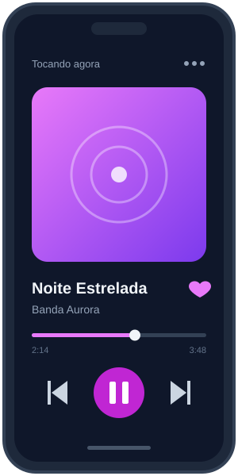

Descubra artistas
Recomendações a partir do que você ouve, com espaço para artistas que ainda não chegaram à sua fila.
Descubra, guarde e siga ouvindo
Comece pelo que você gosta. Descubra o que ainda não conhece. Guarde as faixas que merecem mais uma volta.
Faixa de demonstração incluída no projeto.

Uma faixa para abrir a escuta.
O Melodia imagina a descoberta como parte da escuta. Cada escolha abre caminho para a próxima, sem tirar você do ritmo.
Recomendações a partir do que você ouve, com espaço para artistas que ainda não chegaram à sua fila.
Guarde as faixas para voltar a elas quando quiser, sem começar a busca de novo.
O conceito prioriza áudio de alta qualidade para deixar cada instrumento mais presente.
Uma interface direta para achar o que tocar, salvar ou ouvir depois.
O conceito do app reúne recursos para ouvir do seu jeito, onde a música encontrar você.
Salve faixas para ouvir mesmo quando estiver sem conexão.
Acompanhe os versos enquanto a música acontece.
Regule graves, médios e agudos no equalizador.
Depoimentos ilustrativos criados para apresentar o conceito do Melodia. As fotos são de banco de imagens.
“Encontrei uma banda nova depois de ouvir uma música que já gostava. Foi só deixar a curiosidade seguir.”
 Lucas OliveiraMúsico, personagem fictício
Lucas OliveiraMúsico, personagem fictício“Organizar minha playlist de treino ficou mais fácil do que procurar faixa por faixa.”
 Carla MendesPersonal trainer, personagem fictícia
Carla MendesPersonal trainer, personagem fictícia“Acompanhar a letra me fez prestar atenção em partes da música que eu nunca tinha percebido.”
 Ana SouzaEstudante, personagem fictícia
Ana SouzaEstudante, personagem fictíciaEste formulário faz parte da demonstração acadêmica. Ele valida os campos no navegador, mas não envia nem salva seus dados.